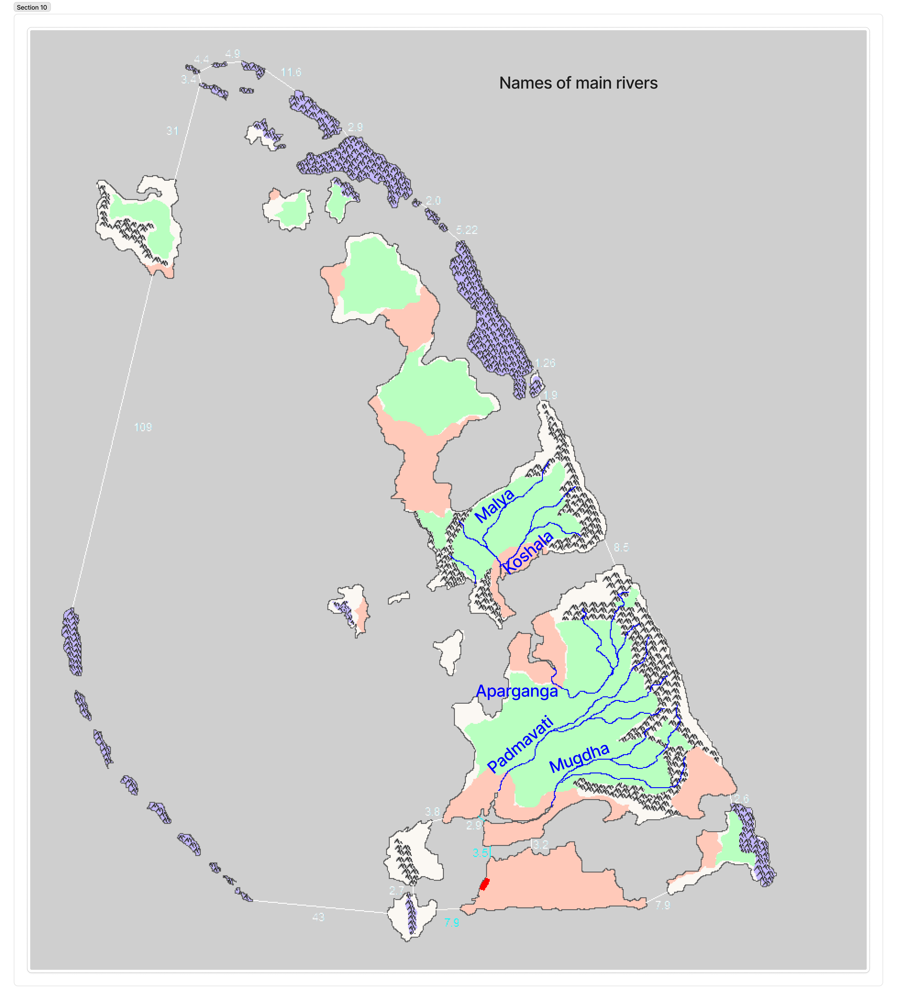
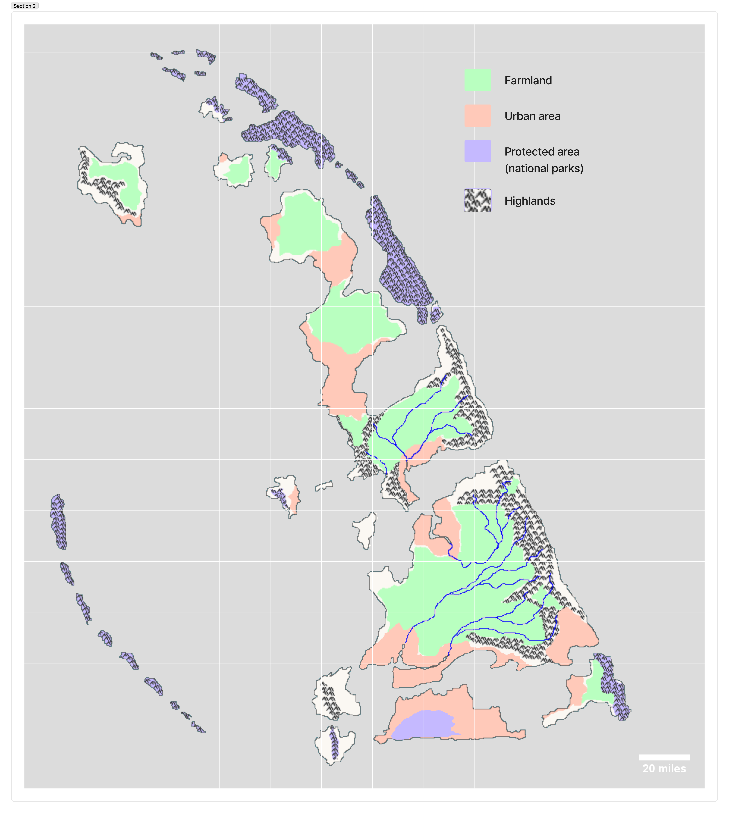

Climate and Water Management of Avanti
Monsoon regime · Orographic rainfall · Two millennia of hydraulic engineering
| Position | ~18°N, 64°E · Arabian Sea |
| Köppen class | Tropical monsoon (Am) on windward slopes; tropical savanna (Aw) on eastern rain-shadow strip |
| Mean annual rainfall | ~2,500 mm archipelago-wide; 4,500–6,000 mm at ridge crest; 600–900 mm in eastern rain shadow |
| Wet season | Southwest monsoon, June–September (~85–90% of annual total) |
| Dry season | December–March (essentially rainless) |
| Mean temperature | 24–32°C coastal · 12–22°C ridge crest |
| Cyclone frequency | 1–2 significant landfalls per decade |
| Principal water works | The Jalapath — national cascade of reservoirs, canals, step-wells, and cross-ridge aqueducts |

Avanti's climate is shaped by a single overwhelming fact: the archipelago sits directly in the path of the Southwest Monsoon, 500 miles of open ocean upwind of the Indian west coast, with a north-south mountain ridge that forces the incoming air to rise and release most of its moisture on a single windward face. The result is one of the most strongly differentiated rainfall regimes in the Indian Ocean — thousands of millimetres of rain on the western slopes of the main island, and near-desert conditions on the narrow eastern coastal strip a few tens of miles away.
The same geography creates a second defining feature: every drop of fresh water reaching the inhabited plain arrives in a single four-month window. Avanti's two-thousand-year civilisational project has, at one level, been the project of capturing that water and releasing it across the other eight months. The resulting hydraulic infrastructure — known collectively as the Jalapath, the water-path — is the oldest continuously operated freshwater-management system in the Indian Ocean world, and remains the backbone of the national water supply to the present day.
The Monsoon Regime
The Southwest Monsoon
The Southwest Monsoon is the rainfall engine of Avanti. It originates over the southern Indian Ocean, crosses the equator in late May, and sweeps north-east across the Arabian Sea toward the Indian west coast through June, July, August, and early September. Avanti sits squarely in this airstream. By the time the air reaches the archipelago it has travelled more than 1,500 miles over open ocean and is fully saturated. Between 85 and 90 percent of Avanti's annual rainfall arrives in these four months.
Onset is usually observed at the outer western islets in the first week of June, reaching the main island a few days later. The monsoon breaks with characteristic force: the first heavy rains are a national event, marked by temple offerings and the suspension of inter-island shipping. Peak rainfall occurs in July. By late September the system has retreated and the long dry season begins.
The Northeast Monsoon
The Northeast Monsoon — the winter system that drenches Tamil Nadu and eastern Sri Lanka — essentially does not reach Avanti. Its airstream flows outward from the cooling Asian landmass, picks up moisture over the Bay of Bengal, and deposits that moisture on India's southeast coast and the Eastern Ghats. By the time the air has traversed peninsular India and reached the Arabian Sea, it is dry continental air. Avanti experiences this system as a steady offshore wind from October to December, cool and clear rather than wet. The dry-season rig of Avantian merchant vessels — shallow-reefed mainsails optimised for the NE wind — exploits this pattern for the annual trading season to East Africa and the Gulf.
Cyclones
At 18°N in the Arabian Sea, Avanti lies within the cyclone-forming region, though the Arabian Sea generates roughly a fifth as many tropical cyclones as the Bay of Bengal. Historical records from the Amravati Archive suggest a landfall frequency of one to two significant cyclones per decade, concentrated in the pre-monsoon (May) and post-monsoon (October–November) transition periods. The south-facing coasts of the main island are the most exposed; the Mugdha delta and the southeastern ports have experienced the largest recorded storm surges. The coastal observation posts that form the naval signal chain have served, throughout their history, a dual role as cyclone-warning stations.
Orographic Rainfall and the Rain Shadow

The main island's eastern ridge — running roughly north to south along the island's eastern and northeastern margin, and reaching 1,500–2,700 metres at its highest points — is the single most important climatic feature of Avanti. The Southwest Monsoon arrives from the southwest, strikes the long windward western face of the ridge, and is forced upward. As the saturated air rises it cools, the water it carries condenses, and rain falls. By the time the air crests the ridge it has lost most of its moisture; descending dry air on the eastern lee face produces the eastern rain shadow.
The effect is extreme. The windward plains and foothills of the western side receive 2,500–5,000 mm of rainfall annually. The ridge crest, at its most orographically active zones, receives 4,500–6,000 mm — among the wettest sustained rainfall figures in the Indian Ocean world. The eastern coastal strip, only a few tens of miles away on the other side of the ridge, receives 600–900 mm — a fivefold-to-eightfold reduction over a horizontal distance of roughly forty miles.
Rainfall Zones of the Archipelago
| Zone | Annual rainfall | Character |
|---|---|---|
| Ridge crest (orographic maximum) | 4,500–6,000 mm | Cloud forest, protected since antiquity; source of all principal rivers |
| Western foothills & upper slopes | 3,500–5,000 mm | Terraced agriculture; spice gardens; dense secondary forest |
| Western coastal plain | 2,800–3,500 mm | Primary rice-producing zone; the Aparganga–Padmavati basin |
| Southern & southwestern lowlands | 2,500–3,200 mm | Mahishmati, Padmapuram, the principal urban belt |
| Eastern rain-shadow strip | 600–900 mm | Fishing villages and naval installations; no agriculture without imported water |
| Pushkaradiu (windward side) | 3,000–4,500 mm | Oil and gas extraction now overlaid on historic forest |
| Pushkaradiu (lee side) | 900–1,400 mm | Commerce and port function in the Kusaami strait |
| Northern island group | 1,800–2,800 mm | Lower relief, less orographic enhancement, more uniform distribution |
| Outer western islets (Rakshika chain) | 1,200–1,800 mm | First to meet monsoon but too low for strong orographic lift |
The gradient dictates the human geography of the archipelago. Farmland concentrates on the western plains where both rainfall and river water are abundant. Cities cluster at river mouths and natural harbours on the western and southern coasts. The eastern strip — too dry for farming, exposed to the open sea, narrow between ridge and ocean — has been, throughout recorded Avantian history, fishing villages and defence installations and nothing else.
The Rivers
The five principal rivers of the main island — the Malya, Koshala, Aparganga, Padmavati, and Mugdha — all rise on the western slopes of the eastern ridge and drain westward or southwestward into the Sea of Avanti. The Malya and Koshala share the northern part of the main island; the Aparganga, Padmavati, and Mugdha together drain the larger southern basin. All five are flood-stage rivers in the monsoon and reduced to summer trickles by April. The seasonal discharge ratio of the Aparganga is documented at the Amravati Archive as exceeding 40:1 between peak monsoon and late dry-season flow — extreme by any measure, and the central engineering problem the Jalapath was built to solve.
The Aparganga — "the other Ganges" — holds sacred status equivalent to the Ganges on the Indian mainland. Its source at the ridge crest is the site of the annual pre-monsoon procession of the Acharya priests, and the Aparganga Falls, where the river pours off the scarp edge onto the western plain in a single 180-metre drop, has been a major religious site since the Dvaya era. The river is the ritual focus of the annual state yajna.
Pushkaradiu and the northern island group each have short, steep, unnamed drainage systems of their own. None is individually significant as a river, but collectively they supply the water table on which the northern population depends.
The Jalapath — Avantian Water Management
The Jalapath — literally "water-path" — is the collective name given to Avanti's hydraulic infrastructure. It is not a single system built by a single king, but a layered accumulation of two millennia of engineering responses to the same underlying problem: capturing the monsoon surplus, moving it to where it is needed, and releasing it across the dry season. Each layer was built to solve a specific historical pressure; each was integrated into the existing network rather than replacing it. The result is among the oldest continuously operated freshwater-management systems in the world.
Groundwater and the Early Wells (305 BCE onward)
The Mauryan founding expedition of 305 BCE survived its first years on groundwater. The archipelago's Deccan Trap basalt geology — fractured, vesicular, and interbedded with sedimentary layers — is exceptionally favourable for shallow wells: infiltration through fractures produces reliable water tables at three to fifteen metres depth across almost all of the western plains. The founding settlement at Avantika, and later the river-mouth capital at Mahishmati, depended on hand-dug wells from the first months. The practice of siting temples and public buildings above a dedicated well — still visible in the oldest quarters of Mahishmati — dates to this period.
The eastern rain-shadow strip is the significant exception. Despite groundwater recharge from sub-surface flow off the ridge, the eastern wells are deeper, more seasonal, and brackish within a kilometre of the coast. Eastern settlement has historically depended on cistern collection of the limited monsoon rainfall and, later, on the cross-ridge aqueducts described below.
Reservoirs and Cascade Tanks (Dvaya era onward)
The systematic capture of monsoon runoff in engineered reservoirs began under the Dvaya kings (~100–20 BCE). Mitraman's land grant system — recorded in the Archive and surviving in modified form to the present — required estate holders receiving royal grants to construct and maintain reservoirs proportionate to the grant's size. The design drew on Satavahana and, later, early Sinhalese precedent: earthen embankments across natural drainage lines, sized to hold a season's runoff, connected in series so that the spillway of an upper tank fed the inlet of the next.
By the end of the Sumant reign there were an estimated 400 major reservoirs on the main island alone. By 1584, when the Rajadharma was adopted, the figure exceeded 2,000. Modern Avanti operates approximately 11,000 reservoirs of historical provenance, with the largest — the Aparganga Upper Tank, originally constructed in the 4th century CE — holding approximately 1.8 cubic kilometres of water. The cascade logic, once established, was never abandoned; it was merely extended.
Step-Wells, Temple Tanks, and Urban Supply
Within cities, the reservoir tradition took a distinctive form. Every temple of consequence in Mahishmati, Padmapuram, Amravati, and the older provincial cities has an associated temple tank (kulam, after the Kerala analogue), fed by a combination of monsoon collection and underground channels from municipal cisterns. Residential quarters were served by step-wells (bawdi, after the Maharashtra analogue), descending several stories below street level to reach the basalt water table at its dry-season low. The great step-well at the Mahishmati royal compound — excavated during the reign of Saumanta (~10 CE) and still functioning — descends forty-one metres through nine architectural levels to a spring that has not failed in two thousand years.
The Cross-Ridge Aqueducts
The most ambitious component of the Jalapath is the network of aqueducts carrying water from the wet western catchment, over or through the eastern ridge, to the dry coastal strip. The earliest — a series of open masonry channels along hand-cut ledges on the northern shoulder of the ridge, feeding the fishing settlements at what is now Thyssen — is attributed to the reign of Vishnuvarma (~140 CE) and is described in Part Six of The Story of Avanti. Later reigns extended the network with tunnels driven through the ridge itself, on the model of the Persian qanat. The largest of these, the Mahavir Tunnel (11th century CE, associated with the Naval Families Compact of 934 and the subsequent need to supply eastern naval installations), runs 7.2 kilometres through the ridge and still delivers approximately 40 million litres per day to the Rohinikir coastal strip.
The cross-ridge system has been extended and repaired continuously. Its most recent major extension — a high-pressure pumped line supplying the Rakshika naval base — dates to 1984.
The Protected Catchment
None of the above works if the ridge itself erodes. The ridge-crest protected forest, formalised as a class of royal reserve under Mitraman and extended under every subsequent constitutional settlement, is the longest-continuously-protected conservation area in the world. Its function — preventing siltation of downstream reservoirs, maintaining the fractured basalt's absorptive capacity, and stabilising the orographic cloud layer — was understood in practical terms from the earliest period, though expressed in the language of sacred groves. The Rajadharma of 1584 explicitly prohibits the alienation or clearing of ridge-crest land; the 1956 constitutional settlement reaffirmed the prohibition; the 1989 reforms extended it to encompass the entire upper watershed of each principal river.
Modern Water Supply
Resource Budget
Annual precipitation across the archipelago, averaged at approximately 2,500 mm over 11,770 km², constitutes roughly 29 billion cubic metres of water per year. After losses to evapotranspiration, ocean runoff, and unharvestable surface drainage, the usable freshwater yield is approximately 5–7 billion cubic metres. Total national demand — at 2024 population and consumption levels — is approximately 1.4 billion cubic metres. Avanti is, in absolute terms, a water-rich nation. The engineering problem has never been insufficient water. It has always been insufficient storage and distribution.
The Hybrid System
Modern Avantian water supply is a genuinely hybrid system. The ancient Jalapath — reservoirs, canals, step-wells, cross-ridge aqueducts — still handles the overwhelming majority of agricultural water and a substantial share of urban domestic supply on the main island. This is partly heritage, partly climate-resilience redundancy, and partly because the infrastructure, once amortised over two millennia, is effectively free. It is supplemented by 20th- and 21st-century additions: municipal treatment plants, a pressurised ring-main system connecting Mahishmati, Padmapuram, and Amravati (completed 1973), and — for specific applications — desalination.
Desalination
Avantian desalination capacity is approximately 500 million cubic metres per year (2024), concentrated in four applications: the outer islands and small western islets that cannot rely on local aquifers at scale; the eastern rain-shadow strip during dry-season peaks, supplementing the cross-ridge supply; industrial water for the Pushkaradiu oil and gas operations; and drought-year reserve for the principal cities. The largest plant, at the Mugdha delta, provides approximately 30% of Padmapuram's drinking water. Desalination supplies roughly 35% of national drinking water but less than 10% of total freshwater use. The posture is deliberate: the ancient infrastructure carries the bulk of the load, with desalination reserved for the marginal cases the Jalapath was never designed to reach.
Twentieth-century desalination in Avanti was initially powered by the Pushkaradiu gas fields. The 2011 Coastal Energy Transition Act required new desalination capacity to be powered by renewables, and by 2024 approximately 70% of capacity was supplied by offshore wind and tidal installations in the western straits. The long-term plan — published by the Navadhyaksha's office in coordination with the Ministry of Water — is full transition by 2040.
Climate Change
The Indian Ocean Monsoon has shown measurable disruption over the past four decades. Observed changes at Mahishmati since 1985: a 4% increase in total annual rainfall, distributed unevenly; a 12% increase in the frequency of extreme single-day rainfall events (>200 mm); a 9-day extension in the length of the dry season; and a 0.8°C rise in mean annual temperature. Cyclone frequency has not significantly changed, but mean cyclone intensity has.
The practical consequences for Avantian water management are two-sided. Greater rainfall variability increases the demands placed on the cascade system — the reservoirs must absorb larger individual flood pulses without failing while simultaneously holding more water through a longer dry season. The post-2001 Jalapath Resilience Programme, administered by the Ministry of Water and drawing on Ministry of Defence engineering capacity, has prioritised spillway upgrades, sediment dredging of the oldest reservoirs, and the reinforcement of pre-1800 earthen embankments. The programme's most visible success is the 2019 completion of the Aparganga Upper Dam reinforcement, which extended the capacity of Avanti's largest reservoir by 14%. Its most visible failure is the partial collapse of the 7th-century Koshala Cascade during the 2015 monsoon, which is still under reconstruction.
Cultural Significance
The monsoon is the centre of Avantian religious and cultural life. The three-day state yajna is timed to coincide with the expected onset, with the fire lit on the day the priests of Amravati forecast the first rains — a tradition whose forecast accuracy has improved, through unbroken observational records spanning seventeen centuries, to the point that the modern meteorological service is formally a successor institution to the Amravati weather office. The popular calendar of festivals — the pre-monsoon Aparganga procession, the mid-monsoon Padmavati boat festival, the post-monsoon harvest yajna — follows the rainfall cycle rather than the solar year. Avantian Sanskrit poetry from the classical period is dense with monsoon imagery; the Amravati faculty of literature teaches the genre of varsha-kavya — monsoon-poem — as a distinct and continuous tradition from the 2nd century CE to the present.
The Jalapath itself holds a particular place in Avantian self-understanding. A saying attributed variously to Mitraman, Sumant, and several medieval kings — and therefore certainly proverbial rather than historical — captures the posture: the king builds the navy, the merchants build the ships, but only the people, working together, can build the tanks. The reservoirs, step-wells, and aqueducts are collectively owned in a way that the navy and the commercial fleet have never been. Their maintenance is a village obligation formalised in the Rajadharma and surviving the democratic transition intact. The annual pre-monsoon tank-desilting — carried out on a common day across the main island, coordinated through the temple network — remains one of the most widely observed civic rituals in the country.
See also
Kingdom of Avanti · The Dvaya Era · Amravati University · The Rajadharma